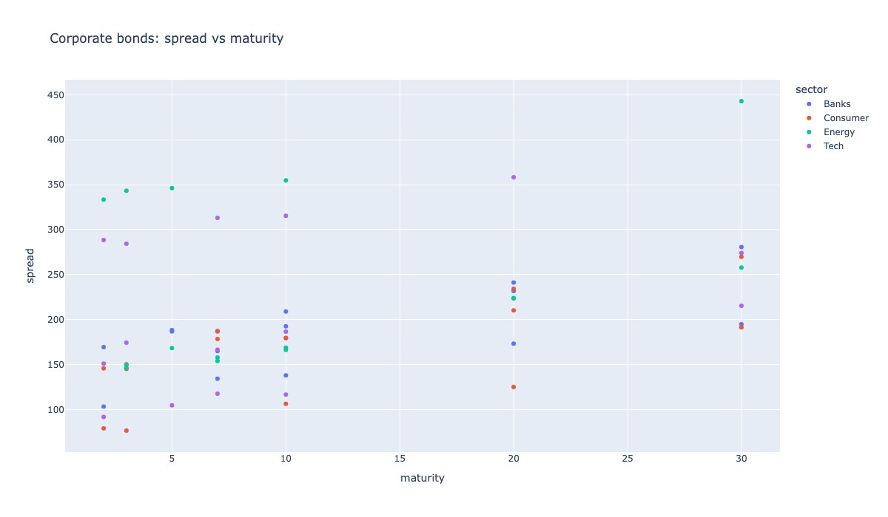
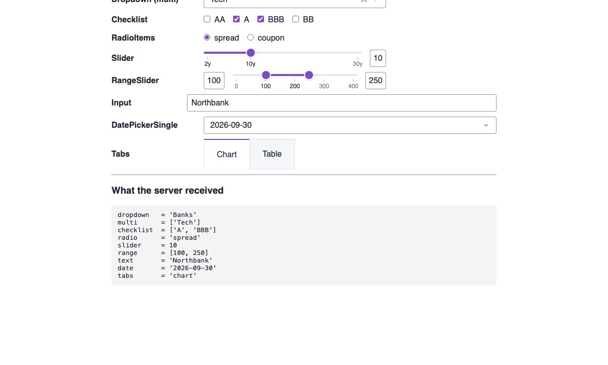
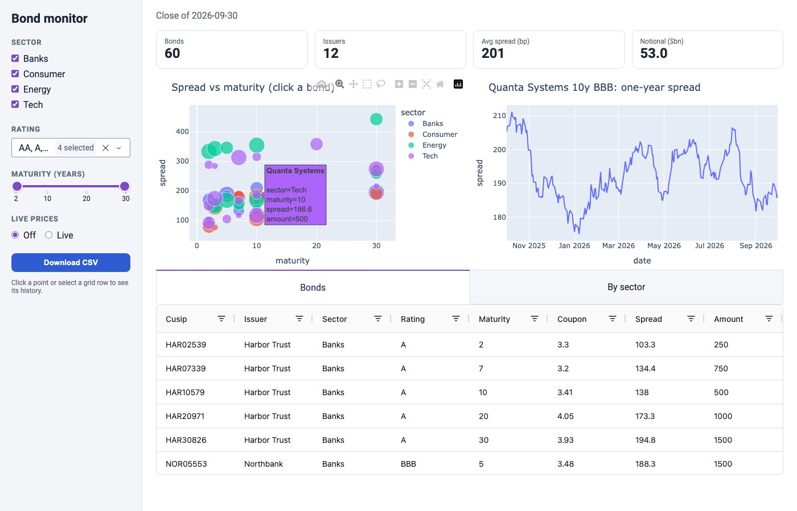

Plan
- 1Plotly alone vs Dash: why a server 4 min
- 2Building a page: layout, Plotly figures, widgets 5 min
- 3Callbacks: how the browser hands work back to Python 7 min
- 4Click a point, drill into another chart 4 min
- 5Letting VS Code + Copilot write Dash for you 5 min
- 6Showcase: a full app 4 min
1 · Plotly alone
Plotly: interactive figures, no server
import plotly.express as px
from data import bonds
fig = px.scatter(bonds, x="maturity", y="spread",
color="sector", hover_name="issuer")
fig.write_html("plotly_only.html")
- Python builds the figure once, as JSON
- The HTML holds the data + plotly.js
- Zoom, hover, legend clicks: all JavaScript in the browser

1 · Plotly alone
Where Plotly alone stops
Fine in the browser
- zoom, pan, hover, select
- toggle traces in the legend
- dropdowns/sliders that switch between data already in the file
Needs Python again
- "show me Energy only", recomputed
- query a database, call a model, run a pricer
- data too big to ship into one HTML file
- one chart driving another, with real logic
Plotly has no back end. Once the HTML is written, nothing can ask Python a new question.
1 · Why a server
Plotly vs Dash
2 · Building a page
The smallest Dash app
from dash import Dash, html, dcc
import plotly.express as px
from data import bonds
app = Dash(__name__) # Flask server + Dash front end
fig = px.scatter(bonds, x="maturity", y="spread", color="sector")
app.layout = html.Div([ # the page: a tree of components
html.H1("Corporate bonds"),
html.P(f"{len(bonds)} bonds"),
dcc.Graph(figure=fig), # any Plotly figure goes here
])
if __name__ == "__main__":
app.run(debug=True) # http://127.0.0.1:8050

2 · Building a page
A layout is a tree of components
html.*: one class per HTML tag:Div,H1,P,Table,Button…dcc.*: interactive pieces:Graph,Dropdown,Slider,Tabs…- Each component has props:
children,style,className,value,figure… - An
idnames a component so callbacks can read or write its props - CSS files in
assets/are loaded automatically
2 · Building a page
Plotly figures inside Dash
dcc.Graph takes any Plotly figure: plotly.express or graph_objects, same code as in a notebook.
dcc.Graph(
id="chart",
figure=px.line(df, x="date", y="spread"),
config={"displayModeBar": False},
style={"height": "400px"},
)
A graph is also an input. The browser fills these props when the user acts:
| prop | set when you… |
|---|---|
clickData | click a point |
hoverData | hover a point |
selectedData | box / lasso select |
relayoutData | zoom or pan |
We use clickData in section 4.
2 · Building a page
Widgets you get for free
| component | its value prop |
|---|---|
dcc.Dropdown (single / multi) | value |
dcc.Checklist, dcc.RadioItems | value |
dcc.Slider, dcc.RangeSlider | value |
dcc.Input (text, number…) | value |
dcc.DatePickerSingle / Range | date / start_date… |
dcc.Tabs | value |
html.Button | n_clicks |
dcc.Interval (a timer) | n_intervals |
dcc.Store, dcc.Upload, dcc.Download | data / files |
add-ons: dash-ag-grid, dash-bootstrap-components, dash-mantine-components |

3 · Callbacks
A callback: "when this changes, run that"
from dash import Dash, html, dcc, callback, Output, Input
app.layout = html.Div([
html.H1("Corporate bonds"),
dcc.Dropdown(sectors, "Banks", id="sector"),
html.P(id="summary"),
dcc.Graph(id="chart"),
])
@callback(Output("summary", "children"),
Output("chart", "figure"),
Input("sector", "value"))
def update(sector):
print(f"server: update({sector!r})")
d = bonds[bonds.sector == sector]
text = f"{len(d)} {sector} bonds, avg {d.spread.mean():.0f} bp"
fig = px.scatter(d, x="maturity", y="spread", color="issuer")
return text, fig

Input =
Output =
(id, prop) to watch.Output =
(id, prop) to fill with the return value.3 · Callbacks, behind the scenes
How the browser hands the work back to Python
3 · Callbacks, behind the scenes
The actual messages (captured from demo 04, trimmed)
request POST /_dash-update-component
{
"output": "..summary.children...chart.figure..",
"outputs": [{"id": "summary", "property": "children"},
{"id": "chart", "property": "figure"}],
"inputs": [{"id": "sector", "property": "value",
"value": "Energy"}],
"changedPropIds": ["sector.value"]
}
response 200, 8.7 KB
{
"multi": true,
"response": {
"summary": {"children": "15 Energy bonds, average spread 242 bp"},
"chart": {"figure": {"data": [ ... ], "layout": { ... }}}
}
}
Terminal: server: update(sector='Energy')
The browser sends values, the server returns values. The figure travels as JSON every time, so keep returned figures lean.
3 · Callbacks
The callback toolkit
| need | use |
|---|---|
| several inputs / outputs | list several Input(...) / Output(...); return a tuple |
| read a value without triggering (e.g. "Apply" button) | State("id", "prop") |
| which input fired? | ctx.triggered_id |
| skip the call at page load | prevent_initial_call=True |
| leave an output unchanged | return no_update (or raise PreventUpdate) |
| change part of a big figure | Patch(): send only the diff |
| keep per-user data between calls | dcc.Store (not Python globals) |
| pure UI logic, no Python needed | clientside_callback (runs in JavaScript) |
| long jobs (minutes) | background=True callbacks with a job queue |
4 · Click to drill down
Click a bond, see its history
overview = px.scatter(bonds, x="maturity", y="spread",
color="rating", hover_name="issuer",
custom_data=["cusip"]) # rides along with each point
app.layout = html.Div([
dcc.Graph(id="overview", figure=overview),
dcc.Graph(id="detail"),
])
@callback(Output("detail", "figure"),
Input("overview", "clickData"))
def show_history(click):
if click is None: # page load: nothing clicked
cusip = bonds.cusip.iloc[0]
else:
cusip = click["points"][0]["customdata"][0]
h = history[history.cusip == cusip]
return px.line(h, x="date", y="spread", title=cusip)

4 · Behind the scenes
What one click does
request captured from demo 05 (trimmed)
{
"output": "detail.figure",
"inputs": [{
"id": "overview", "property": "clickData",
"value": {"points": [{
"curveNumber": 2, "pointNumber": 4,
"x": 30, "y": 191.4,
"hovertext": "Maple Foods",
"customdata": ["MAP30203"]
}]}
}],
"changedPropIds": ["overview.clickData"]
}
A click is just another prop change. Same loop as the dropdown: any chart can drive any other.
5 · VS Code + Copilot
Let Copilot write the Dash code
- Open
demos/in VS Code, select the venv - Copilot Chat → Agent mode (it can create and run files)
- Describe one feature in plain words
- Run, look, ask for the next change
- Paste errors from the Dash error panel back into the chat
You describe the what (ids, inputs, outputs). Copilot writes the boilerplate.
Prompt 1
Create
Prompt 2
Add a sector dropdown above the chart (default Banks). When it changes, show only that sector and a sentence with the count and average spread.
Prompt 3
When I click a bond, show its spread history from
Create
my_app.py: a Dash app showing a scatter of bonds, maturity vs spread, coloured by sector, issuer on hover.
Prompt 2
Add a sector dropdown above the chart (default Banks). When it changes, show only that sector and a sentence with the count and average spread.
Prompt 3
When I click a bond, show its spread history from
history in a second chart. Use custom_data for the cusip.
5 · VS Code + Copilot
Give Copilot the rules once
demos/.github/copilot-instructions.md is read with every request in this workspace:
- Use Dash 3 or later. Import with
`from dash import Dash, html, dcc, callback, Output, Input`.
Do NOT use dash_core_components / dash_html_components.
- Start the app with app.run(debug=True) (run_server is gone).
- Get the data with `from data import bonds, history`.
- Give every component a callback uses an explicit id.
- No global state in callbacks; use dcc.Store.
- After a change, list each Input(id.prop) -> Output(id.prop).
Why it matters
- Models have seen years of old Dash code:
dash_core_components,app.run_server,@app.callback - Naming the data and its columns stops invented files
- "List the Input → Output pairs" lets you check the wiring before reading the code
6 · Showcase
A bond monitor in ~140 lines

demos/06_full_app.py
6 · Showcase
What's inside, mapped to today's ideas
| feature | how |
|---|---|
| Filters drive KPIs, scatter, grid, sector chart | one callback, 4 Inputs → 8 Outputs |
| Click a bubble or select a grid row → history | clickData + selectedRows, ctx.triggered_id |
| Sortable, filterable table | dash_ag_grid.AgGrid |
| Live re-pricing every 2 s | dcc.Interval as an Input; a toggle enables it |
| Download the filtered bonds | dcc.Download + State + prevent_initial_call |
| Styling | assets/style.css, picked up automatically |
Same loop everywhere: a prop changes in the browser → POST → your function → new props.
Wrap-up
Taking it further
Deploy
server = app.server→gunicorn app:server- several workers ⇒ no globals; share state via
dcc.Store, a cache or a DB - cache slow loads (
flask-caching)
Grow
- multi-page apps:
use_pages=True+pages/ - big data on charts:
Patch,plotly-resampler - docs:
dash.plotly.com· AG Grid:dash.plotly.com/dash-ag-grid
Questions?